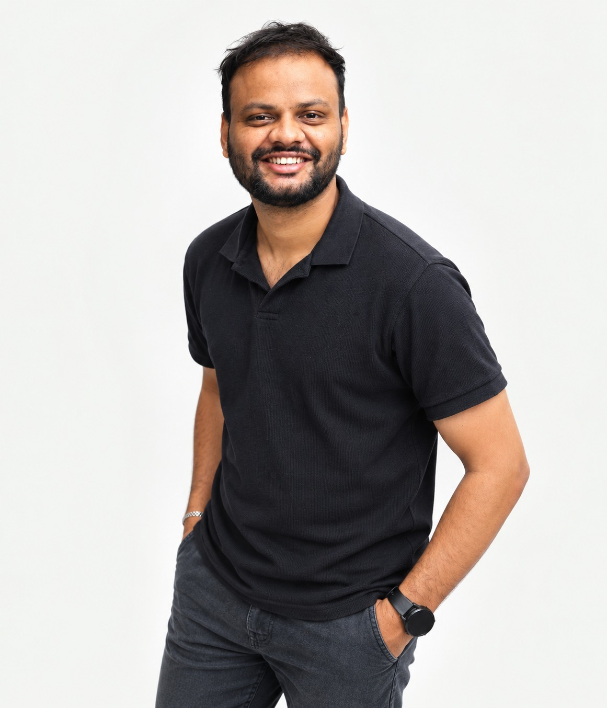

Video editing
Long-form narratives, product videos, social content, and cinematic wedding films. Built around rhythm and story.
↗I’m Sharath Chandra. I turn footage into stories
that move people — through editing, motion & sound.
From the first hook to the final frame.
A selection of stories across formats.

SHARATH CHANDRA ↗I’m a video editor and motion designer based in Hyderabad, with five years of experience in post-production, motion graphics, and creative leadership.
I work across long-form storytelling, sharp social edits, product videos, and wedding films — bringing rhythm, clarity, and emotion to every project.
Long-form narratives, product videos, social content, and cinematic wedding films. Built around rhythm and story.
↗Animated type, visual explainers, and motion graphics that make complex ideas easy to follow.
↗Sound design, color, and the small details that give a film its atmosphere and emotional weight.
↗Sr. Video Editor & Motion Designer
Sr. Video Editor, Motion Designer & Production Lead
Sr. Video Editor
Motion Designer & Video Editor · Remote